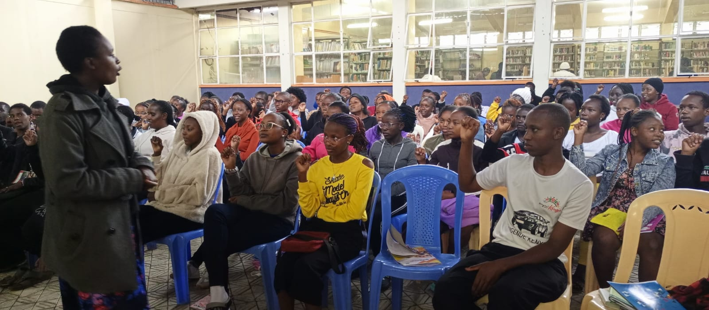
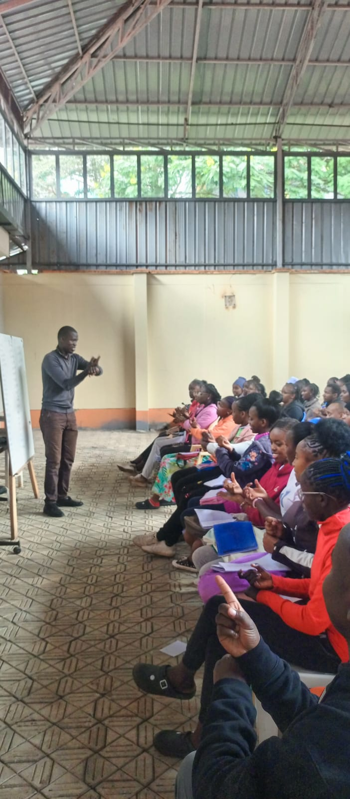
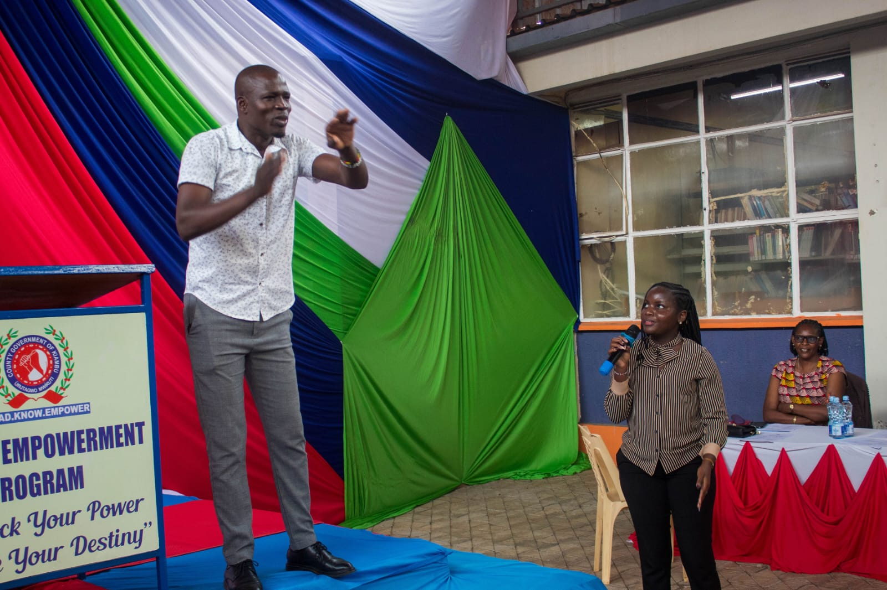
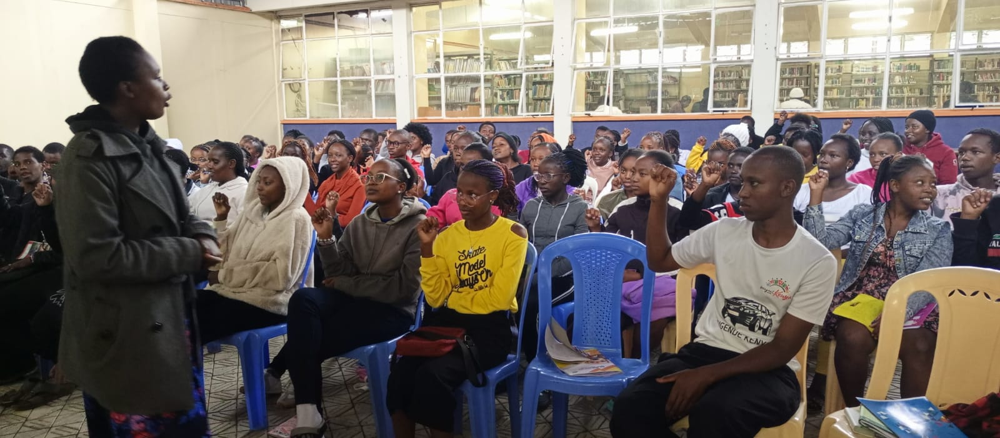
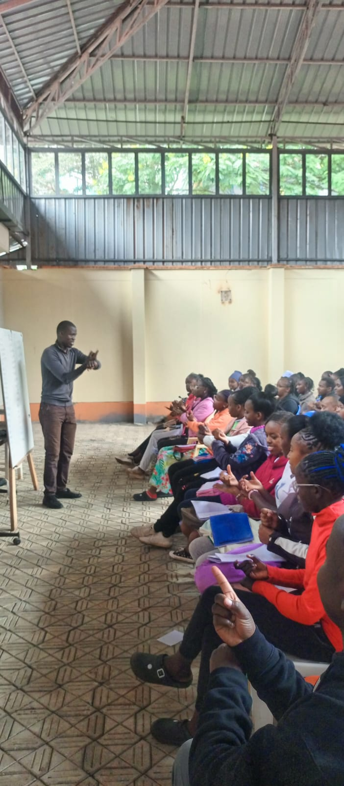
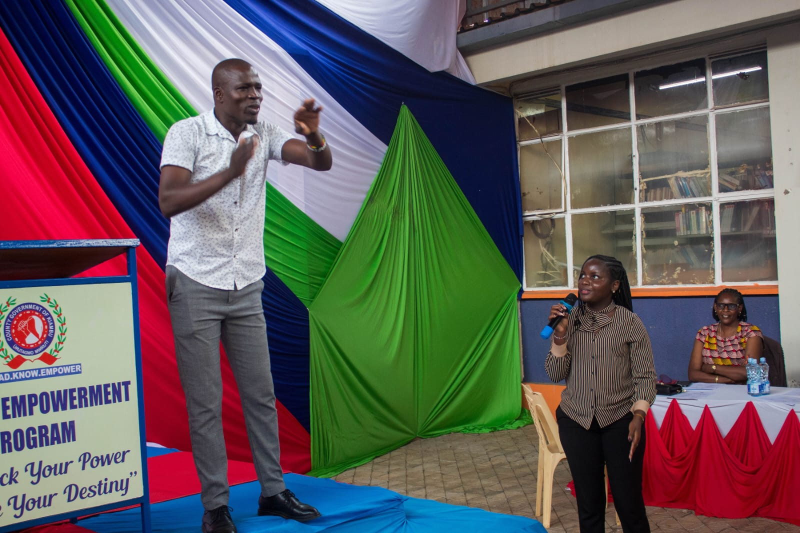

Welcome to PRO-TERP SIGN LANGUAGE TRAINING CENTRE Empowering Communication. Bridging Communities. Building Professional Interpreters. At PRO-TERP Sign Language Training Centre, we are dedicated to equipping learners with the skills, confidence, and certification needed to communicate effectively with the Deaf community. Our programs are designed for beginners, professionals, educators, caregivers, and aspiring interpreters who are passionate about inclusive communication. We offer structured sign language training, professional interpreter preparation, and recognized certification programs guided by experienced trainers and Deaf culture advocates. Our learner-centered approach ensures practical competence, cultural understanding, and real-world application. What We Offer Comprehensive Sign Language Courses (Beginner to Advanced) Professional Interpreter Training (PRO-TERP Programs) PRO-TERP SIGN LANGUAGE TRAINING CENTRE is a professional institution dedicated to advancing effective communication through high-quality sign language training and certification. The centre exists to bridge the communication gap between the Deaf and hearing communities by equipping learners with practical sign language skills, cultural understanding, and professional competence. Through a structured and learner-focused approach, PRO-TERP nurtures individuals who are confident, ethical, and capable of communicating accurately and respectfully in diverse real-world settings. PRO-TERP SIGN LANGUAGE TRAINING CENTRE has several branches. The main Branch is Thika. The Other branches include Meru and Ruiru all well-equipped by sign language professionals. The mode of study include online, physical learning and home schooling. The training programs are designed to serve a wide range of learners, including beginners with no prior knowledge, professionals seeking to enhance their communication skills, educators, caregivers, public service providers, and individuals aspiring to become certified sign language interpreters. Emphasis is placed not only on language fluency but also on comprehension, expression, and interpretation, ensuring that learners develop both receptive and expressive signing abilities. The centre recognizes that sign language is more than a tool for communication; it is a living language deeply connected to Deaf culture, identity, and community values. PRO-TERP SIGN LANGUAGE TRAINING CENTRE delivers training that aligns with recognized professional standards, combining theoretical knowledge with extensive practical application. Learners are guided by experienced instructors who possess strong academic backgrounds, professional interpreting experience, and a deep respect for Deaf culture. The learning environment encourages participation, continuous practice, and real-life engagement, enabling students to gain confidence and competence as they progress through the programs. Certification at PRO-TERP is structured to assess genuine language proficiency and professional readiness. Graduates leave the centre equipped with skills that are relevant for employment, community service, education, healthcare, legal settings, and other environments where accurate and ethical interpretation is essential. The centre remains committed to inclusivity, accessibility, and excellence in training, ensuring that every learner is supported throughout their journey. At its core, PRO-TERP SIGN LANGUAGE TRAINING CENTRE believes that effective communication promotes dignity, equality, and social inclusion. By training skilled sign language users and professional interpreters, the centre contributes to building a society where communication barriers are reduced and meaningful connections are strengthened.